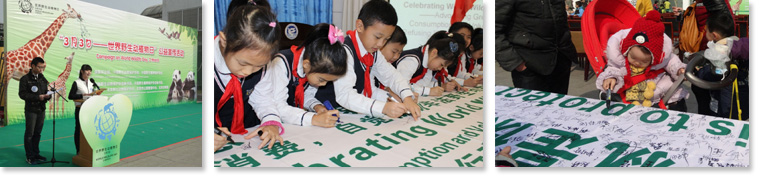

How To Get Involved

There are plenty of ways for you to join the World Wildlife Day celebrations, wherever you are. World Wildlife Day has been oberved in the in the past by people, groups and authorities around the world and in various ways. Whether you take part in big events or even the smallest of gatherings, you can help raise awareness of wildlife and promote conservation and sustainable use!
Here are some of our suggestions for this year's celebrations:
Get to know the animal and plant species under threat where you live, in your area or country, and find out more on the threats and challenges they and their habitats face, and what can be done to conserve them. Share this knowledge with your family and friends.
Spread the word on social media: share your thoughts and upload a picture of yourself and those closest to you with our action card, or use our Social Media Kit for inspiration.
Use our hashtags for this year's celebration: #WorldWildlifeDay #WWD2020 #SustainingAllLife #Biodiversity2020 #SustainableUse
And do follow the official Twitter, Facebook and Instagram accounts of World Wildlife Day.
Bring World Wildlife Day with you to class and talk to students and educators about wildlife and biodiversity. Young people are the future leaders of wildlife conservation. A thriving planet and a rich biodiversity are their birthright, and they deserve a future where humans live in harmony with the wildlife that shares the planet with us.

Organize or enter a competition! It can take many forms, for examples, an art competition, a photo competition, a speech competition on the world's rich biological diversity, or on the links between all living creatures and their habitats. Or why not a World Wildlife Day marathon? It’s up to you!

Engage with celebrities, influencers, athletes, politicians, businesses and appoint them as Wildlife Conservation Ambassadors or key opinion leaders.

Take the World Wildlife Day to the street: raise awareness about wildlife protection and engage with people through conversation, billboards and street parades.

Show your appreciation for rangers, law enforcement officers, as well as youth conservation leaders and all those who are on the frontlines every day in the fight to conserve wildlife.

Launch a new campaign linked to World Wildlife Day – make it specific to a local issue or species!

Organize a talk show, a presentation or discussions at your local school or university on wildlife life conservation and biodiversity.

Collect signatures for a "say ‘no’ to illegal wildlife products" campaign.

Set up a wildlife exhibition for education and awareness building following the theme of the year when possible.

Visit your local zoo, wildlife park, museum, botanical gardens or national park. Collaborate with local zoos, parks, botanical gardens, national parks, aquariums or museums and encourage them to celebrate World Wildlife Day – suggest entry by donation on that day! Our partners such as World Association of Zoos and Aquariums (WAZA) are encouraging their members to celebrate the day. Use your talent to show your support to wildlife and biodiversity conservation and inspire the world.

Donate to your local conservation projects. Remember, donations are not always financial! Hold a screening of wildlife films. Interested in hosting the screening of the winning film or finalists of this year's World Wildlife Day Film Showcase? Check out the page for this year's contest on the website of our partner, Jackson Wild. Have Fun! World Wildlife Day is a celebration and your own creativity is the only limit!

Make sure to announce your event so we can see how World Wildlife Day is being celebrated around the world! Everyday wildlife protection Wildlife conservation is an issue that needs attention every day. The threats weighing on wildlife are often large and complex, so much so individuals might feel powerless about them. However, every person’s small actions add up to a much larger solution – making the difference between a species surviving or disappearing forever. Just #DoOneThingToday to make a difference and help wildlife conservation. Set a Goal – Live your daily life with the smallest negative impact on the environment, wildlife, their habitats, or the planet’s biodiversity. Mobilize – Encourage local schools, clubs, governments and businesses to discuss wildlife conservation and what you and your community can do to help. Visit – Aquariums, botanical gardens, national parks and nature reserves. Research holiday destinations and countries that work hard to protect wildlife and habitats. Consume Responsibly – By not purchasing products made from illegally sourced protected wildlife or their parts and products, you can stop wildlife trafficking from being a profitable enterprise. More information can be found through your national or local wildlife authorities or the Convention on International Trade in Endangered Species or Wild fauna and Flora (CITES). Volunteer – We cannot always give money, but we can donate our time. Often wildlife organisations and zoos have volunteer programs. You could also help clean beaches, rescue wild animals or teach tourists about your local habitat. Stay informed – Learn more about our planet’s flora and fauna, including those that are in danger of extinction. Research ways that you or your community can conserve and protect wildlife. Inform yourself on current environmental matters and be aware of your individual impact on ecosystems and wildlife. Think globally, act locally. Speak up – Share your knowledge, passion and questions about wildlife conservation with your friends, family and community – either in person or online. Reach out – inform authorities if you have information on illegal logging, fishing and wildlife trafficking; whistle-blowers play a critical role in detecting wildlife crimes and holding criminal smugglers accountable.